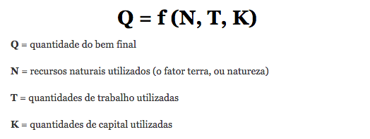
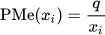
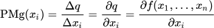
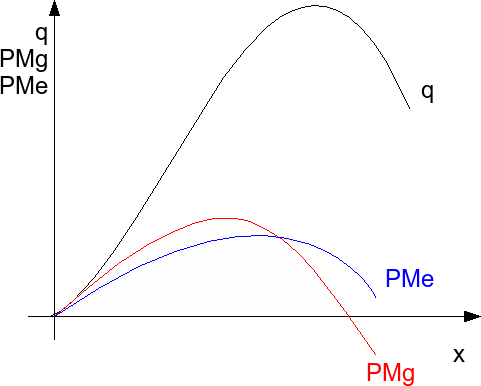

A Teoria de Produção faz parte da Teoria da Firma, e tenta determinar qual a quantidade ideal para ser produzida e conseguir atender a demanda do mercado. Existe uma função que oferece a possibilidade desse cálculo:
Vale destacar que N, T e K podem ser considerados fatores fixos ou variáveis, por exemplo, a terra utilizada para produção é considerada um fator fixo no curto prazo, pois independe da quantidade de recursos produzidos no uso deste espaço e também não muda de valor num curto período de tempo. Já a quantidade de trabalho utilizada (T) é considerada como um fator variável, pois varia conforme o volume de produção.
A produtividade média de um fator (PMe) é calculada como o quociente entre a quantidade produzida (q) e a quantidade utilizada do fator em questão (x):
A produtividade marginal de um fator (PMg) é calculada como o quociente entre a variação na quantidade produzida (q) e a variação na quantidade utilizada do fator em questão (x). Também pode ser entendida como a derivada da função da teoria da produção ƒ(x1,...,xn)
A produtividade marginal de Xi mede a quantidade de unidades produzidas (q) que cresce com o acréscimo de uma unidade de Xi.
O gráfico acima ilustra as funções de produção, as de produtividade média e de produtividade marginal no curto prazo. Para se ter ideia de como seria no longo prazo, teríamos de levar em conta os "Rendimentos de Escala".
Os Rendimentos de Escala vão calculando a quantidade produzida conforme vão se somando ou aumentando os fatores de produção, podem possuir três formas: